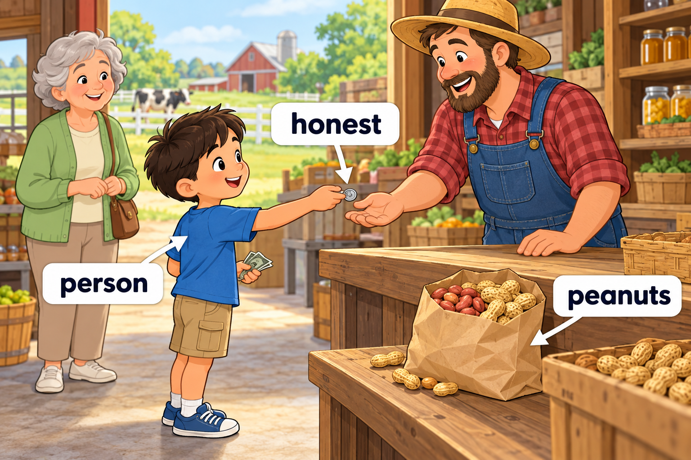
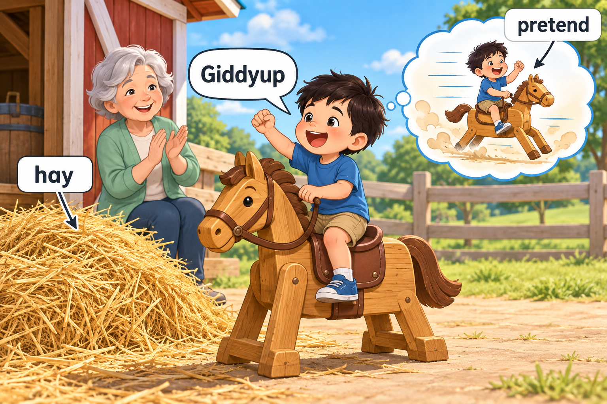

Scene 1 — An honest person Day 28 “You are an honest person,” the farmer said when Miller returned a lost coin.Then Miller bought some peanuts with his own money.honest, person, peanuts.查看中文解释Miller 把捡到的硬币还给农场主，农场主夸他是个诚实的人。然后，Miller 用自己的钱买了些花生。
Scene 2 — A living being Day 28、Day 29 Beside the shop, Miller watched a goldfish swim.A sign said, “Every living being needs food and water.”“What else does it need?” he asked.goldfish, being, else.查看中文解释小店旁，Miller 看着金鱼游动。牌子上写着：“每一个有生命的个体都需要食物和水。”他问：“它还需要什么呢？”
Scene 3 — Giddyup! Day 29、Day 30 There was a pile of hay beside a wooden horse.“Let us pretend it can run,” Miller said.“Giddyup!” he called from the saddle.hay, pretend, Giddyup.查看中文解释木马旁有一堆干草。Miller 说：“我们假装它能跑吧。”他坐在马鞍上喊：“驾！”
Scene 4 — One last game Day 30 Behind a low fence, Miller found a swing and a seesaw.He tried them both before going home.fence, swing, seesaw.查看中文解释矮栅栏后面有一个秋千和一个跷跷板。Miller 都玩了一会儿，然后回家了。